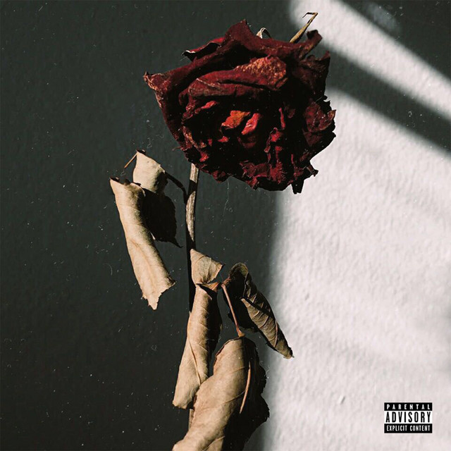

aqui você irá encontrar as melhores músicas e albuns do trap brasileiro
REFERÊNCIAS DO TRAP BR:
Veigh: um dos artistas mais conhecidos do Brasil, ele possui aproximadamente 10 milhões de ouvintes mensais.
Dos prédios
é um dos albuns destaque do artista
Bk: conhecido por músicas de amor, é um bom artista se você estiver sofrendo uma ilusao amorosa ou um termino recente
Castelos & Ruínas
é considerado por muitos como o melhor trabalho do BK. Lançado em 2016, foi o primeiro álbum solo do artista.

Kayblack: grande artista, ele produziu vários hits de peso em sua carreira, como Freestyle, Licor 43, Contradições (álbum) e seu mais novo álbum que conta com 3 faixas, "Mistérios".
Dfideliz: se você fala de trap e jazz, você sempre irá falar de Dfideliz, seus beats de jazz são incriveis.
Reflexões
